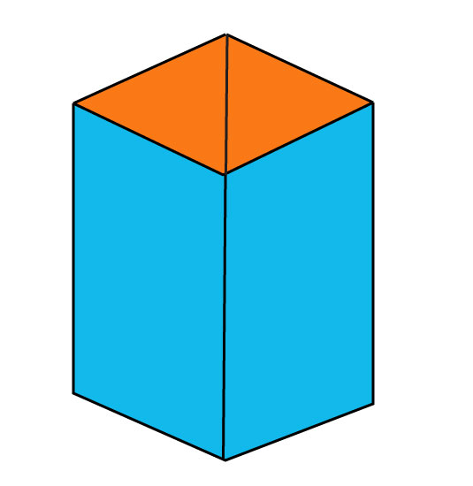
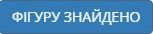

2. Далі на екрані з’явиться проста фігура (Ілюстрація 2). Це триватиме десять секунд. Після того ви знов побачите складну фігуру. Разом з тим розпочнеться відлік часу.

Інструкція. Вам буде показано 24 складні фігури. До кожної складної фігури буде запропоновано просту фігуру, яка міститься у складній і є її частиною. Ваше завдання – знайти і виділити цю просту фігуру у складній.
На пошук кожної простої фігури надається 120 секунд. Результатом тесту вважається час, витрачений на виконання всіх 24-ч завдань.
1. Спочатку, впродовж п’ятнадцяти секунд, ви побачите складну фігуру (Ілюстрація 1). Її необхідно ретельно роздивитись і запам’ятати.
2. Далі на екрані з’явиться проста фігура (Ілюстрація 2). Це триватиме десять секунд. Після того ви знов побачите складну фігуру. Разом з тим розпочнеться відлік часу.
3. Як тільки ви віднайдете просту фігуру у складній, натисніть кнопку «ФІГУРУ ЗНАЙДЕНО» (Ілюстрація 3).
4. Усі лінії складної фігури стануть інтерактивними. При наведенні курсору лінія забарвлюється в сірий колір (Ілюстрація 4).

5. Щоб виділити лінію, клацніть по ній лівою кнопкою миші. Колір лінії при цьому зміниться на білий (Ілюстрація 5).

6. За допомогою курсору слід виділити ті лінії складної фігури, які утворюють просту фігуру (Ілюстрація 6). Коли завдання виконано, натисніть кнопку «Перевірити».